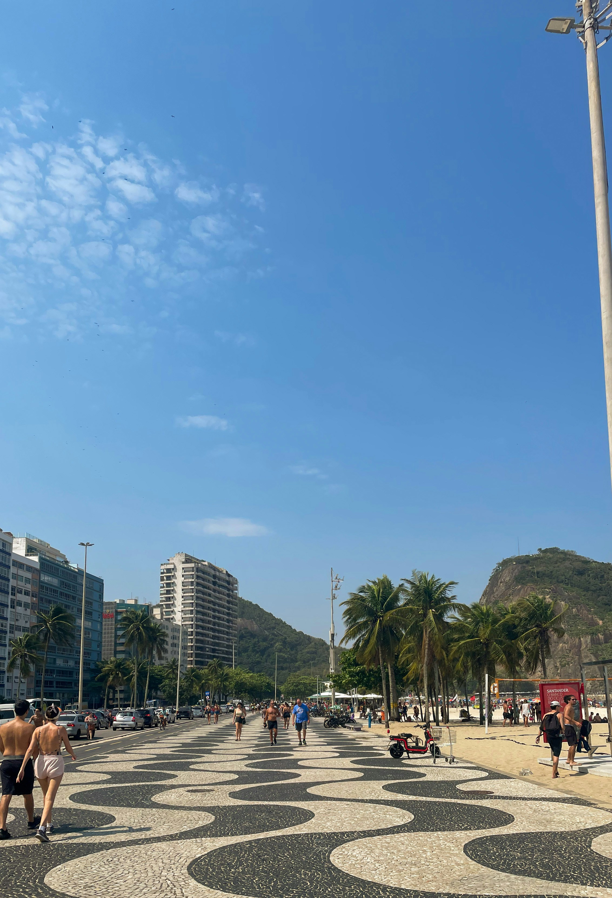
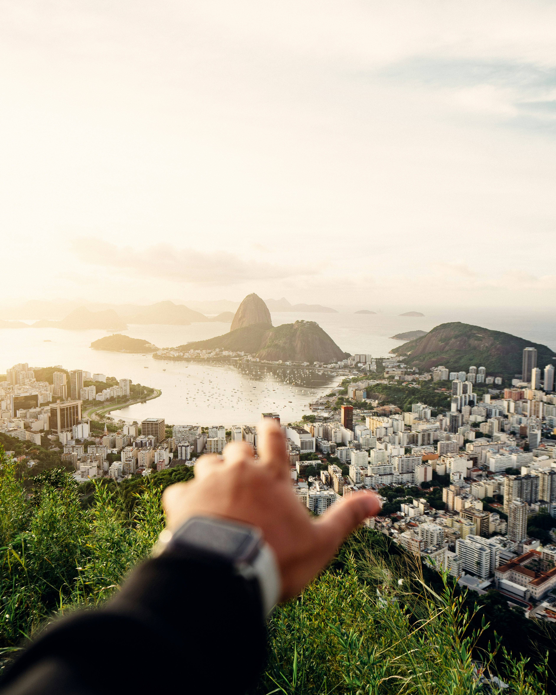
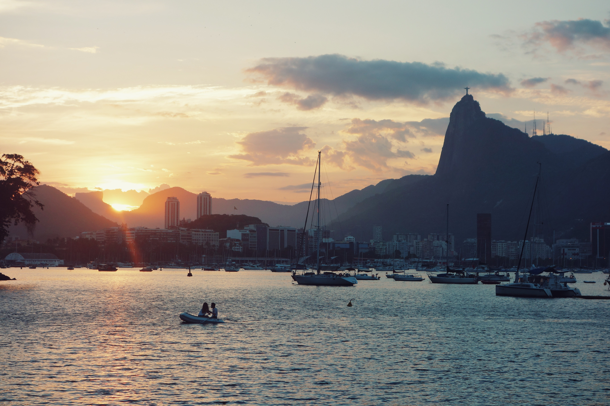

04 — Zona Sul


Praias, cartões-postais e vida carioca
01
Cristo Redentor
ImperdívelIngresso
Chegue antes das 9h para evitar filas e nuvens. Reserve online em tremdocorcovado.com.br
02
Pão de Açúcar
ImperdívelIngresso
Vá no fim do dia — o pôr do sol é espetacular e inesquecível

03
Praia de Copacabana
GratuitoImperdível
O calçadão ondulado é patrimônio histórico. Vá de manhã cedo ou no fim da tarde
04
Praia de Ipanema
GratuitoImperdível
Cada trecho tem sua "tribo" — surf, LGBT+, famílias. Pôr do sol no Arpoador é gratuito e único
05
Jardim Botânico
NaturezaIngresso
Fundado em 1808. 6.500 espécies, bromélias, vitória-régias e a famosa alameda de palmeiras imperiais

06
Mirante Dona Marta
GratuitoImperdível
Vista aérea do Rio com Cristo ao fundo e Botafogo embaixo. Menos turistas que o Cristo. Use Uber para subir

07
Lagoa Rodrigo de Freitas
Gratuito
7,2km de pista ao redor. Vista do Corcovado de todos os ângulos. Quiosques com gastronomia variada
08
Praia de São Conrado
GratuitoAventura
Ponto de pouso dos voos de asa delta e paraglider. Praia mais tranquila e menos lotada que Copa e Ipanema